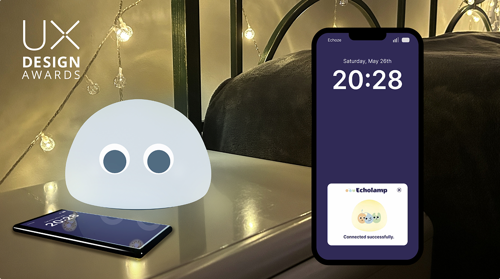
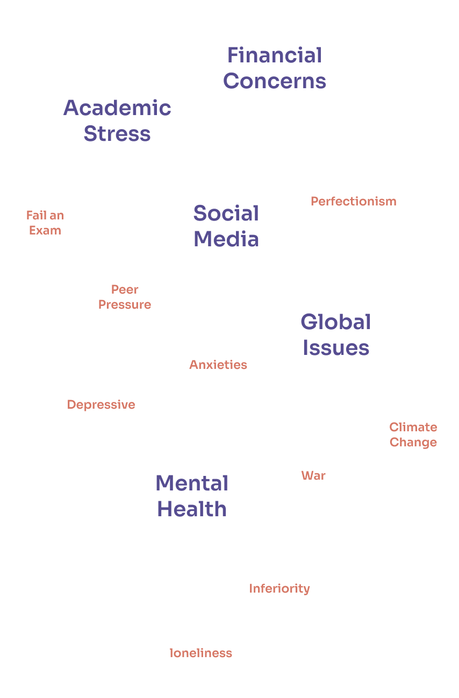
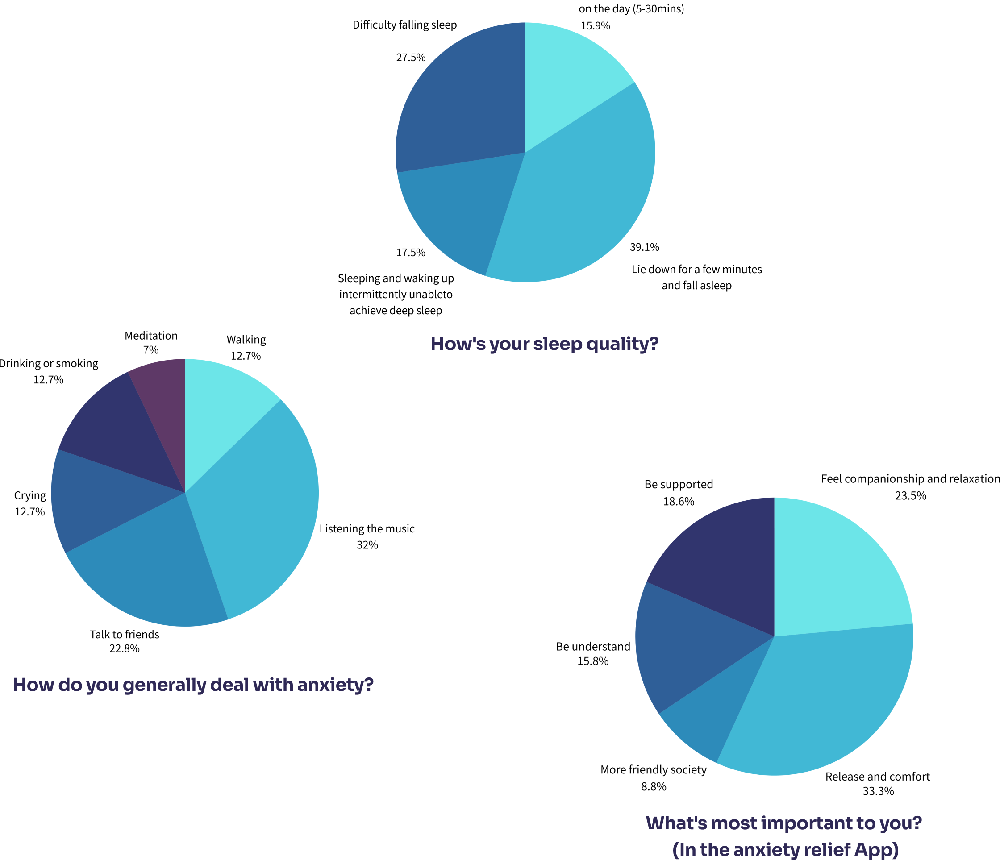
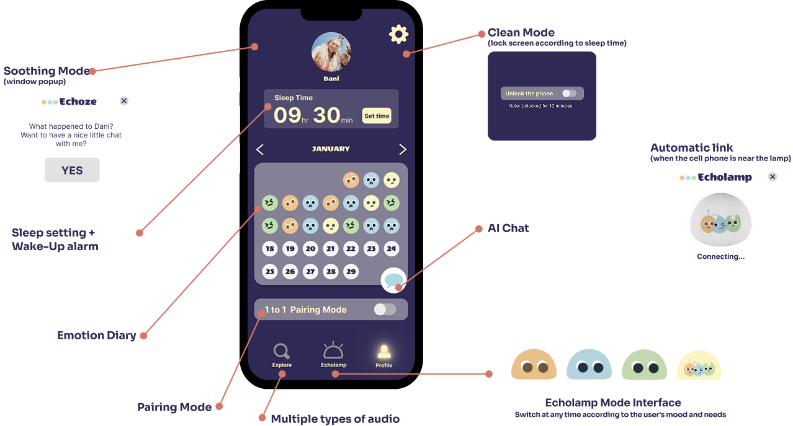
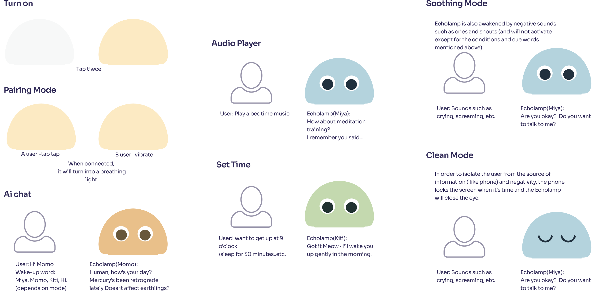
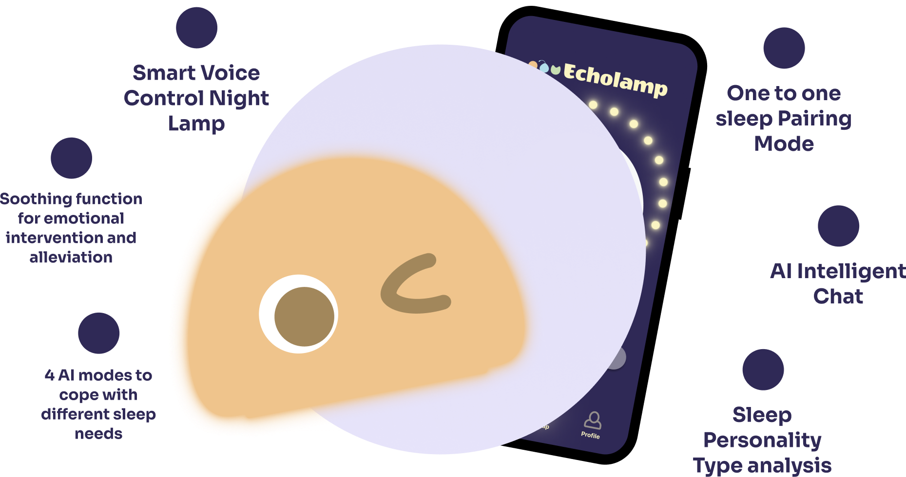
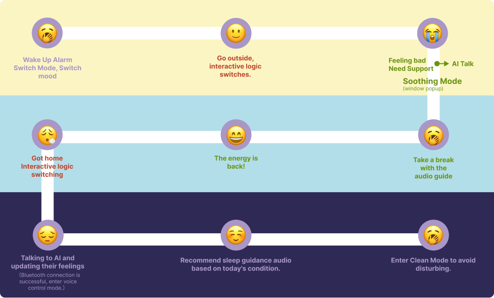
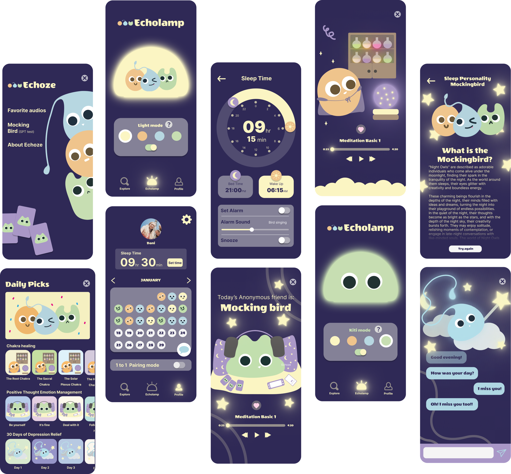

Echoze
AI chatbot for Insomniacs

Start Point
To reduce the time it takes for people with insomnia and anxiety to transition from lying in bed to falling asleep through intelligent emotional support.
Gen Z Sleep data
Screen Time: Gen Z spends significantly more time on their devices compared to Millennials, with nearly half of Gen Z connected online for 10 or more hours a day. This increased screen time contributes to sleep disturbances and feelings of isolation.
-Verywell Mind
Technology Use Before Bed: Gen Z is 26% more likely than Millennials to stay up late due to prolonged technology use, further impacting their sleep quality.
-Sleepopolis
Gen Z Sleep Issues: Around 46% of Gen Zers struggle to fall asleep on more than half of the days in a week, which is 21% higher than Millennials.
-Sleepopolis
IN FACT, AN EXTRA 60 TO 90 MINUTES OF SLEEP A NIGHT CAN MAKE US HAPPIER AND HEALTHIER.

We divided the questionnaire into two sections for mood and sleep.
Because we've found that poor sleep is just a result, it's more about getting to the source of what's causing us to sleep poorly.


#Excerpts from the interview
C(One of them): It'd be awesome if the app could help me doze off again when I wake up in the middle of the night. I struggle to get back to sleep, so having a function for that would be super helpful. Also, if it can help me to wake up from nightmares, because I often have nightmares too. Because after the nightmare, I really couldn't calm down.
B: For me it's just a random thing. I can't sleep without the sounds. Sometimes I listen to videos of people talking before bed, and I don't care what they are talking about, as long as they're talking. The important thing is, I don't have to care what they are talking about.
C: I tried every alarm on my iPhone and it was terrible and now I have to wake up to with beep beep.
Persona
Danielle
Age: 16-26
Job: Art Director,
Illustrator
Education: RMIT
School of Design
- Planning to be a youtuber
- Try more different careers
- Become a volunteer and help more people
- Pressure of Social Expectations.
- Social life is so complicated that she feels out of control.
- Online media creates a lot of anxiety.
- Try Yoga and Meditation for Anxiety Relief
- Experimenting with baking and exotic cuisine
- Ran an ins account with 5k followers
- As a digital native, she is inundated with information from all kinds of media on a daily basis, and her brain can't rest in peace, wishing there was a way to get some breathing room.
- Faced with sudden emotional problems, she needed a channel to release and relieve her emotions.
- She has a habit of checking her cell phone at night, which prevents her from falling asleep on time and occasionally bedtime procrastination.



The Day with Echoze


